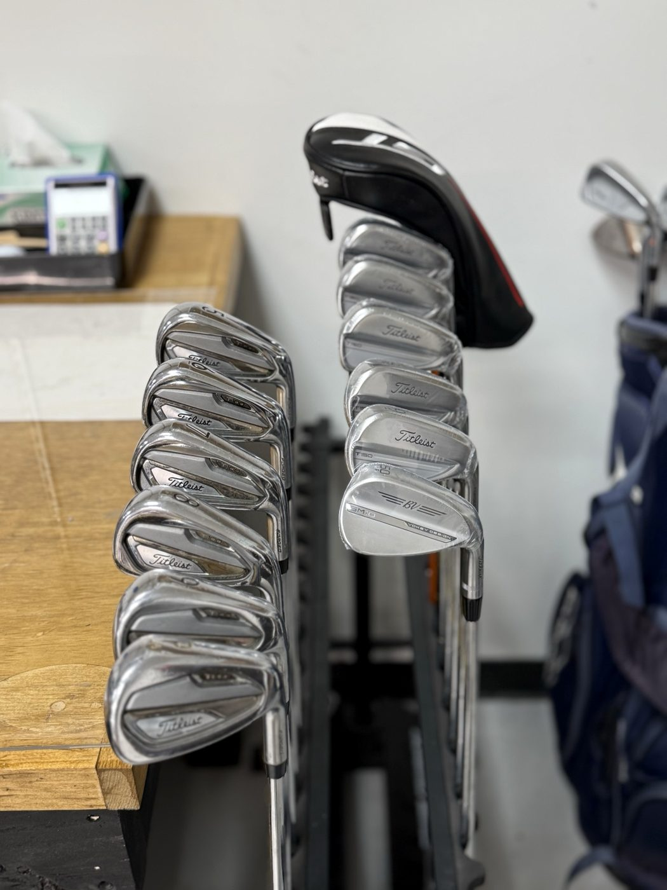
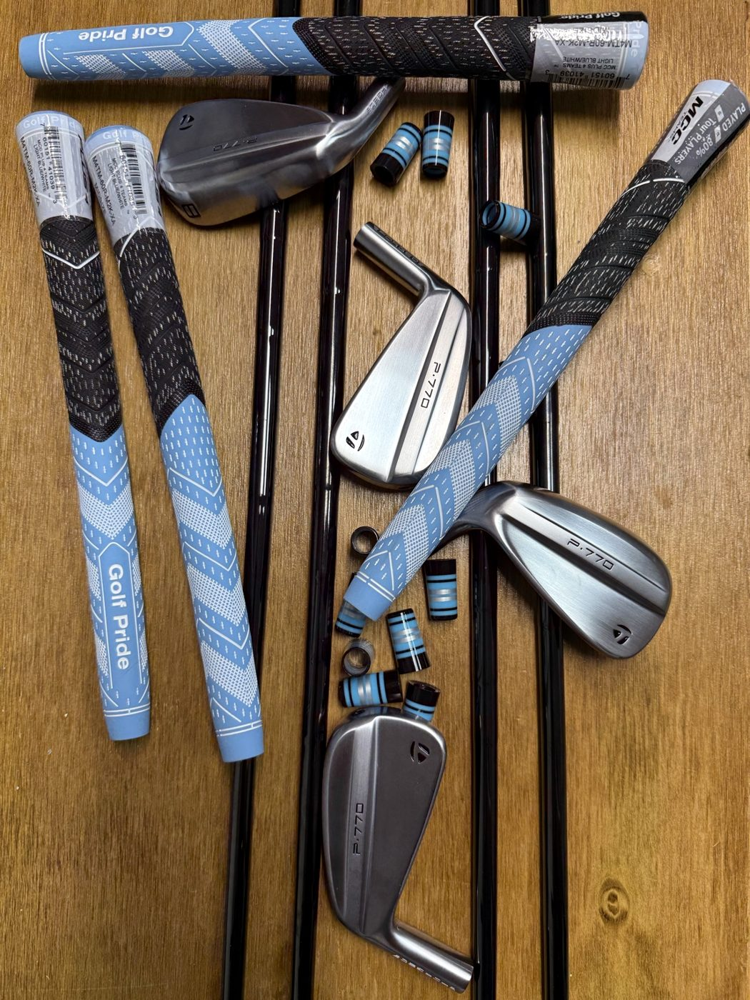
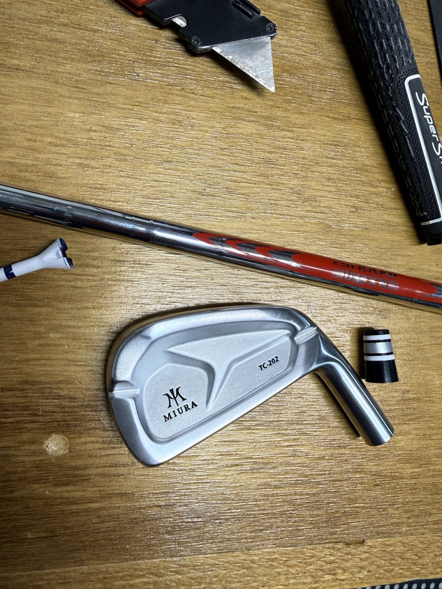

Custom details
Ferrules in unique colors and patterns, grip colors and styles, and premium shaft options — including black-finish shafts.
Premium components, distinctive details, and a professional finish on every build.
Your clubs should perform for your game and reflect your personal style. From premium aftermarket shafts and distinctive ferrules to colorful grips and personalized finishing touches, every build is an opportunity to create something uniquely yours.
Ferrules in unique colors and patterns, grip colors and styles, and premium shaft options — including black-finish shafts.
Shaft upgrades and replacements, custom assembly, and loft, lie, and playing-length adjustments.
Ask about select wedge stamping and paint-fill projects, available depending on the design and workload.
Clean ferrule transitions, carefully aligned logos, and meticulous presentation are part of every build. Whether it's one shaft or an entire set, the finish matters.
Clubhead finish refinishing is not offered.
Request a Custom BuildA closer look at the components, details, and finishing touches behind our custom work.


